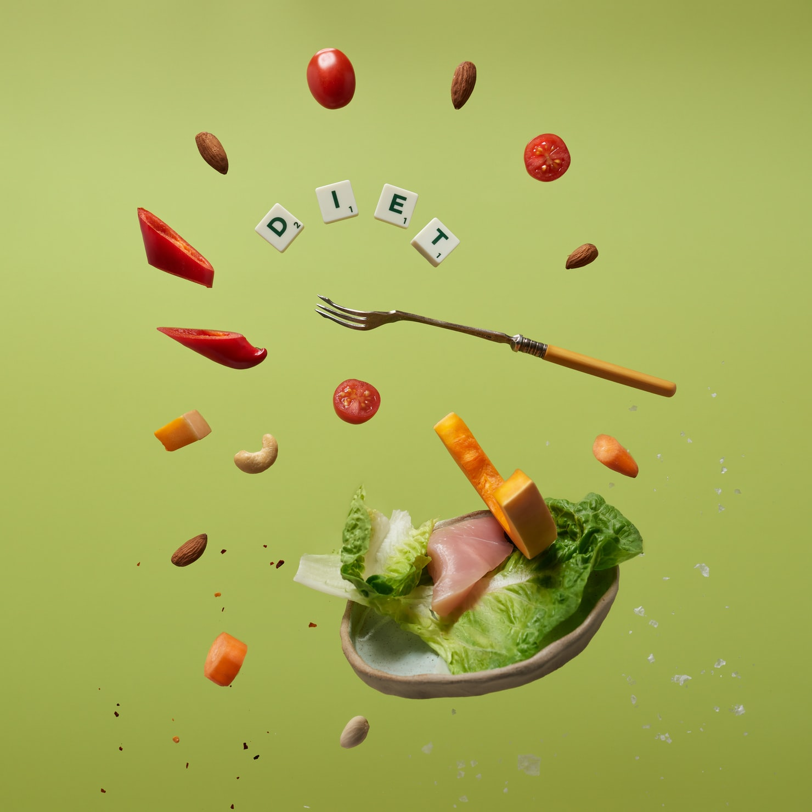
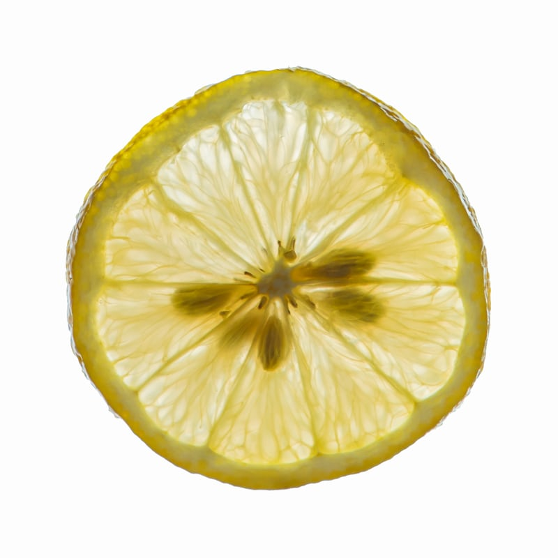
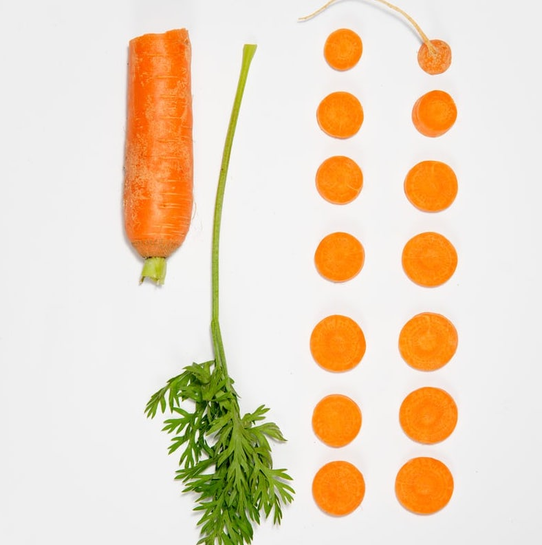
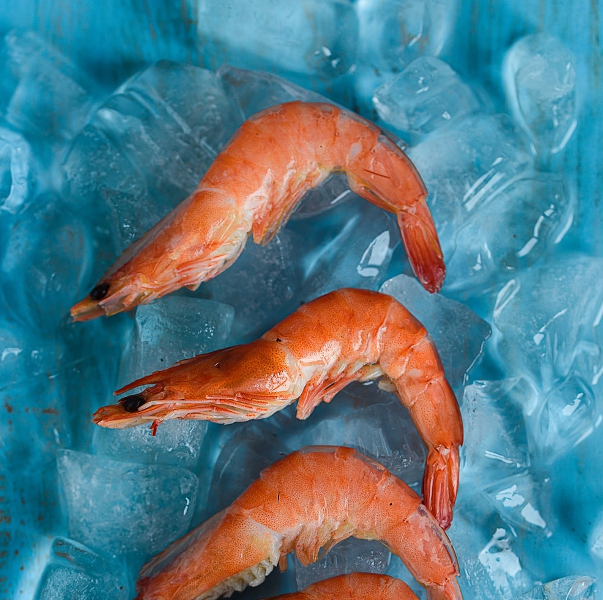

What is nutrition?
Nutrition is the study of nutrients in food, how the body uses them, and the relationship between diet, health, and disease.
Nutritionists use ideas from molecular biology, biochemistry, and genetics to understand how nutrients affect the human body.
Nutrition also focuses on how people can use dietary choices to reduce the risk of disease, what happens if a person has too much or too little of a nutrient, and how allergies work.
Nutrients provide nourishment. Proteins, carbohydrates, fat, vitamins, minerals, fiber, and water are all nutrients. If people do not have the right balance of nutrients in their diet, their risk of developing certain health conditions increases.
What Are Micronutrients?
Summary
Micronutrients are one of the major groups of nutrients your body needs. They include vitamins and minerals. Vitamins are necessary for energy production, immune function, blood clotting and other functions. Meanwhile, minerals play an important role in growth, bone health, fluid balance and several other processes.
Micronutrient Museum

Water-Soluble Vitamins
These vitamins dissolve in water, so the body can't conserve them, so it requires more daily intake.
- E.g. Vitamins B and C
- Functions: boost enerngy for body, strengthen cells
- Vitamin B food: poultry, milk, legumes, fish, egg, dark green vegetables, whole grains
- Vitamin C food: many fruits and vegetables, esp. citrus, peppers, kiwi, strawberry, broccoli

Fat-Soluble Vitamins
Dissolve in fat, not water. These vitamins can be stored in the body in fatty tissue and liver.
- E.g. Vitamins A, D, E, K
- Functions: eye health, immune system support, heal injuries
- Vitamin A food: liver, fish oil, butter
- Vitamin D food: fatty fish, mushrooms
- Vitamin E food: vegetable oils, seeds, nuts

Microminerals
Essential nutrients, need larger amount
- E.g. calcium, sodium, potassium, chloride, sulfur
- Functions: muscle and bone health, control blood pressure
- Sodium: table salt; small amount in whole foods
- Potassium: meats, milk, fruits & vegetables, grains
- Calcium: milk, greens, fish with bones, legumes

Trace Minerals
Essential nutrients, need small amount
- E.g. iron, manganese, copper, zinc, selenium, iodine, fluoride
- Functions: critical for muscle health, nervous system, repair cell damage
- Iron: organ meat, red meat, poultry, shellfish, egg yolks, dark leafy greens
- Zinc: meat, fish, poultry, vegetables